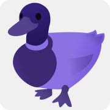

Portfolio
Messages
July 2023 - September 2024
Short Film - 6:46 min
Responsibilities: Directing, Screenplay/Storyboard, Camera, Editing
This short film was created as part of my bachelor thesis and builds on the theoretical part, which itself deals with time (travel) in film. The film takes place in two time levels, between which it switches repeatedly. It is about a person who reads through her message history from her ex-partner and remembers the past relationship.
Additional files
Screenplay - Messages
Storyboard - Messages
Introduction
October 2023
Video - 1:08 min
Responsibilities: Editing
This video is an introduction. It was made for a course during my semester abroad at the University of Tsukuba. The aim was to introduce myself without the use of language. It shows me, while pictures and videos are shown in reversed chronological order. Most of the material was captured by my friends.
This Website

October 2024
Website - written in HTML & CSS
I created this portfolio website. Most HTML & CSS code was written by myself (the rest was heavily modified).
The source code and more information about this website can be found on its GitHub-Page.
University of Tsukuba Guide - How to survive
February 2024
Article - written in Markdown
Responsibilities: Writing (92%), Formatting, Maintaining
This is a written guide with a concise collection of knowledge and resources, ideal for incoming exchange students and people visiting Japan for the first time.
Interactive Paper Dog
December 2023
Figure
Responsibilities: Construction, Programming
A dog sculpture with an origami head that waves its tail when its back is petted. For the realization, an Audorino was programmed so that when the touch sensor is touched, the motor is set in motion, causing the tail to wave.
The chaos whithin
June - July 2022
Short Film - 3:28 min
Responsibilities: Camera, Editing (75%)
This short film is about transsexuality and war, in which a not yet outed trans* woman is drafted into the armed forces.
Warum bist DU hier?
August 2022
Video - 4 min
Responsibilities: Editing, Speaking Role
This video was created using wildlife camera footage. It depicts a dialogue between animals and humans.
Reflections
May 2022
Short Film - 32 sek
Responsibilities: Directing, Camera, Editing (35%)
This video was a short filming and editing exercise with the main theme of reflections.